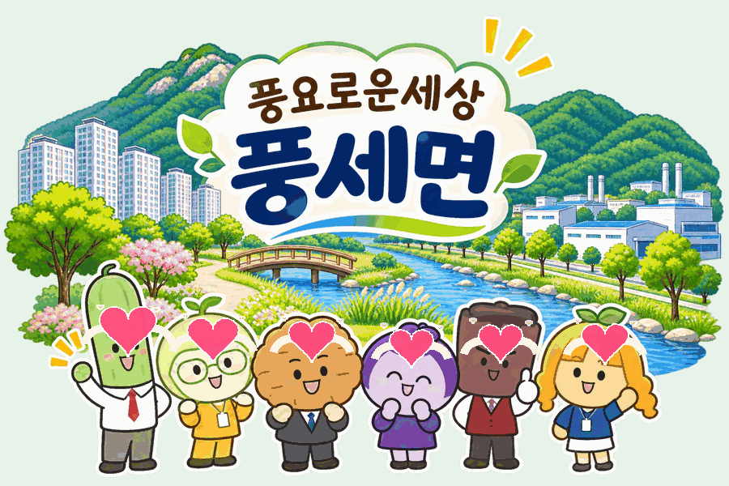

CHEONAN · PUNGSE 2026
자연과 산업,
삶이 함께 크는 곳
풍요로운 세상, 풍세면
지역 현황 / 주요 사업 / 발전 방향
천안시 동남구 풍세면
NATURE · PEOPLE · FUTURE
01 / 06
PUNGSE / TODAY
인구 1만 명 시대,
빠르게 달라진 풍세면
행정안전부 주민등록 인구통계 기반 · 2026년 9월 기준
POPULATION TREND
단위: 명연말 및 최근 월말 인구 추이
02 / 06
PUNGSE / IDENTITY
풍세를 설명하는 세 가지 풍경
자연환경 · 대규모 정주 공간 · 산업 기반이 공존하는 지역
태학산과 풍서천
숲 · 물길 · 휴양자원
3,200세대 아파트
한양수자인 에코시티
풍세 산업기반
기존 산업단지와 신규 개발
자연 + 주거 + 산업
03 / 06
PROJECT / 2026
주요 사업, 생활의 변화를 만들다
2026년 보도·사업 공고로 확인되는 풍세면 관련 사업
01
풍서천 호두길 정비
RIVERSIDE2026.4 착공 · 전체 대상 16.8km
↗자전거 순환망 연결
02
남관지구 배수개선
SAFETY15억 원 · 배수로 1.2km 개선 계획
↗침수 위험 저감
03
태학산 휴양림 확장
FOREST2026.8 숲속의집 통신공사 입찰
↗산림 휴양기반 확충
※ 추진 시점과 단계는 확인된 2026년 자료 기준
04 / 06
FUTURE / DIRECTION
앞으로의 풍세, 세 방향의 균형 성장
아래 내용은 확정 사업이 아닌 지역 현황을 토대로 한 발전 방향 제안
살기 좋은 풍세
주거 · 교통 · 생활편의 연결
정주 품질 ↗
일하기 좋은 풍세
산업 입지와 지역상생 강화
지역경제 ↗
머물고 싶은 풍세
태학산 · 풍서천 자연자원 연계
관광 · 휴양 ↗
05 / 06
PUNGSE · CHEONAN
풍요로운 세상
함께 만드는 풍세면
자연과 사람, 미래가 만나는 곳
PUNGSE · CHEONAN ♥

손하트 애니메이션 · 10초 반복06 / 06